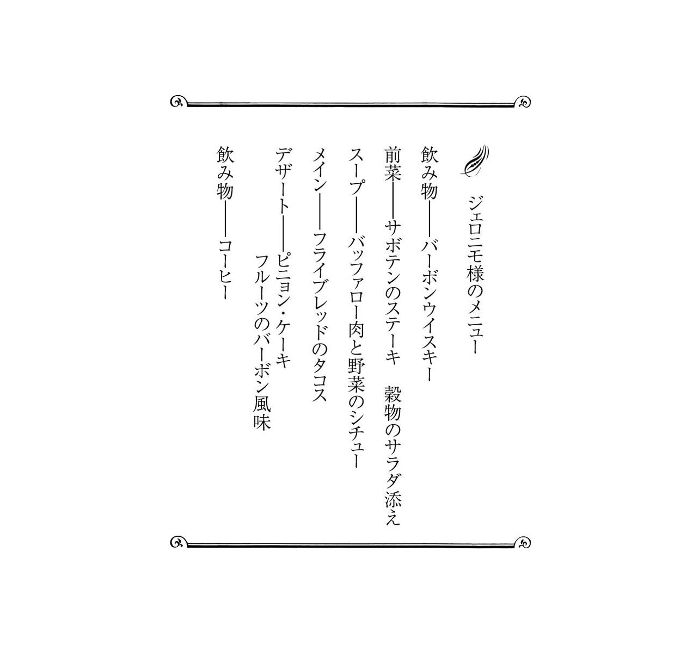
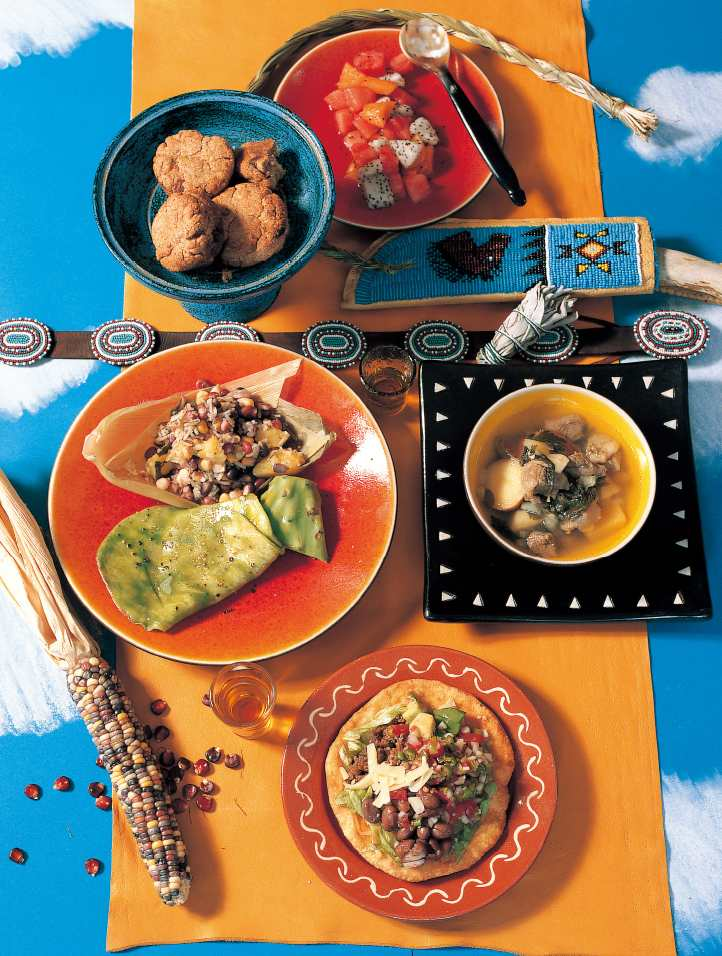
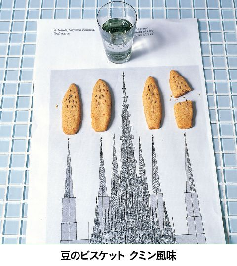

| 迷宮レストラン 第５巻 | |
| 河合 真理 | |
| (2006) | |
ＮＨＫ出版
迷宮レストラン 第５巻
河合真理
このレストランのコンセプトは、事前にお迎えする方の情報を収集した上で、毎回、ただ一人のお客様のために、お好みに合わせた料理をご用意することです。
食材については、それぞれの時代、土地に存在していると思われるものの中から選び、調理道具に関しても可能なかぎり実在していたものに近づけて使用することを前提にして、すべてのレシピを作っています。
なかには個々の時代や土地に実在するレシピをそのままに再現しているものもありますが、ほとんどの料理は、資料から得られた情報を参考に、シェフが考案創造したレシピですので、その点はご了承ください。
あるとき私は、子供のころから憧れていた人物、スペインの建築家ガウディの伝記を読んでいて、彼が何を食べていたのだろうと気になりはじめました。そして、資料を集めて調べているうちに、あっという間に夢中になってしまいました。
誰にとっても、食べるということはごく日常的に行われている行為です。それゆえ、食事に対する考え方は、その人の生まれ育った環境や、人生観が無意識に映し出されていくものだと思うのです。
例えば、ナポレオン１世。眠る時間さえ惜しんだ彼にとって、食事もまた出来れば省略してしまいたい通過儀礼の一つに過ぎなかったのではないでしょうか。また、レオナルド・ダ・ヴィンチは自身の思想や美学に従って、健康的でバランスのとれた理想的な食生活を実現していました。先にあげたアントニ・ガウディにとっては、退廃に誘うすべての欲望を回避し、ストイックに自己実現をしていくための要素の一つとして食があったのかもしれません。ダーウィンにとっては学びの場として好奇心を満たしてくれるものであり、ファーブルにとっては、洗練された楽しみの場であったように思います。
資料を読みあさるにつれて、私の中で彼らの姿が現実味を帯びていくようになり、それに伴い、「この素材をこう料理したら、この人は喜んでくれるかもしれない」「こんな料理を食べてくれたら、もう少し体調がよくなったかもしれない」などと考えるようになっていました。資料にある未知の食材や調理法にふれてみたいという気持ちも手伝って、具体的なレシピが次々と頭に浮かぶようになってきたのです。
そんなことから、今回、この迷宮レストランを開店する運びとなりました。
さて、ただいまから、迷宮レストランがオープンいたします。お料理とともに、時空の旅をごゆっくりお楽しみください。
迷宮レストラン・オーナーシェフ 河合 真理
 まえがきに代えて
まえがきに代えてデザイン 中嶋香織
イラスト 古屋亜見子
撮影 長嶺輝明
スタイリスト 西村千寿
校正 井口泰子
この本のレシピで使用している計量カップはカップ１＝２００㎖、計量スプーンは大さじ１＝15㎖、小さじ１＝５㎖です。
アパッチの戦士が食べていたもの
ジェロニモが率いたチリカウア・アパッチは、現在のニューメキシコやアリゾナの周辺で暮らしていましたが、常に合衆国当局やメキシコ軍の圧迫にさらされていました。
ジェロニモの本名は「ゴヤスレイ」。あくびをする人という実に暢気な名前でした。しかし、メキシコ軍によって母、妻、そして３人の子供を惨殺されたことで別人に生まれ変わります。怒りと復讐のため、返り血で血みどろになりながら戦う姿に、恐れおののいたメキシコ兵が「ジェロニモだ！」（獅子のように戦う聖者ヒエロニムス）と叫び、仲間内でもジェロニモと呼ばれるようになったのです。
ところで元来、アメリカ先住民であるアパッチ族は、農耕（とうもろこし、瓜、かぼちゃ、豆、芋など）と狩猟で暮らしていました。ジェロニモも幼いころから両親を手伝って畑仕事をしていました。家族全員が畑ですいかを持って立っている「スイカ畑のジェロニモ」という微笑ましい写真も残っています。狩猟の対象は兎や鹿、バッファロー、七面鳥などで、猪や魚は爬虫類を食べているという理由で口にしなかったのだそうです。また、竜舌蘭やサボテン、木の実類も、アパッチにとっては重要な食料でした。
さて、今回の料理では、アメリカ先住民やジェロニモにかかわる資料を調べただけではなく、実際にいくつかの居留地を訪れ、直接アパッチ族、ラコタ族、プエブロ族、チェロキー族の人々に伝統的な料理法や食材などを取材しました。また、食材にはミネソタ産のバッファロー肉、オジブエ族が昔ながらに採取しているワイルドライスやメイプルシロップ、プエブロ族が採取したピニョンナッツなど現地のものを使用しています。
私はアメリカにはたびたび出かけていましたが、今回のように先住民の方たちと身近に接したことはありませんでした。ジェロニモが80年の生涯を閉じてから百年余りになりますが、先住民の暮らしぶりは歴史の表と裏を教えてくれたように思います。
旅を終えて、最も印象的だったのは、青すぎる空と群生するワイルドセージの広大な平原でした。ジェロニモが天国で再び自由の身のゴヤスレイとして、セージの原野を見下ろしながら食事を楽しんでいる様子を思い浮かべながらメニューを作りました。


｜シェフによるメニュー説明｜
飲み物──バーボンウイスキー
アメリカ先住民は元来、アルコールを嗜みませんが、アパッチだけはとうもろこしを醸造した「ライズウイン」という強い酒を飲んでいました。また、大変切ない話ですが、ジェロニモはウイスキーを飲んで落馬し、そこへ雪が降りだして肺炎になり、亡くなったのです。そんなことから、好きなお酒ですが、ショットグラスで１杯だけ用意しました。
前菜──サボテンのステーキ 穀物のサラダ添え
チリカウア・アパッチの酋長であったジェロニモの本名はゴヤスレイですが、メキシコ人に家族の命を奪われたことから復讐の鬼となり、神がかった激しい戦い方から「ジェロニモ（聖ヒエロニムス）」と呼ばれるようになりました。合衆国政府から見れば悪鬼なのでしょうが、私は、ネイティブとして侵略者に徹底抗戦したジェロニモに共感を覚えます。さて、本日はメキシコ産のサボテンを使い、堅い皮をそいでから、塩、胡椒でサッとステーキに。ニューメキシコ産のブルー・レッド・スイートコーン、スクワッシュ、ミネソタ産のワイルドライスをゆで、オニオン・ビネガー、塩、胡椒で和えて添えました。
スープ──バッファロー肉と野菜のシチュー
バッファロー肉は先住民の重要な食材でした。今でもジェロニモの子孫たちは「バカシ・ビツ」という水煮シチューを食べています。本日はバッファローの肉にワイルドポテト、セロリを合わせ、塩煮のシチューを作りました。アメリカ先住民の儀式で魔よけのお香としても使われるワイルドセージで香りづけしています。
バッファロー肉と野菜のシチュー
材料（４人分）
バッファローロース肉２００ｇ、スパイスパウダー（セージ、オレガノ、パプリカ）、アンデスポテト３個、スクワッシュ１００ｇ、セロリ１本、セージ２本、にんにく１かけ、塩・胡椒各適宜
作り方
１ 肉は小さめに切り、（ ）内のスパイスパウダーと塩少々をふって下味をつける。
２ 芋は皮ごと２～４等分に切り、スクワッシュはところどころ皮をむいて食べやすい大きさに切り、鍋に入れ水カップ５とともに火にかける。
３ ２が沸騰したら１の肉、一口大に切ったセロリ、セージを加え、うまみが出て柔らかくなるまで45分間以上煮る。
４ 味をみて塩、胡椒する。
メイン──フライブレッドのタコス
「バン・イカハ」という揚げパンもアパッチの伝統食で、現在も食べられています。その揚げパンの上に、バッファロー肉、レタス、アボカド、豆、グリーンチリ（アパッチはレッドチリではなくグリーンチリを使う）を合わせたサルサをたっぷりかけたフライブレッドのタコスを作りました。これも、私が現地で食したものを参考にしました。
フライブレッドのタコス
材料（４人分）
フライブレッド〔小麦粉（薄力粉）カップ１ 、ベーキングパウダー小さじ、ラード（またはオリーブ油）適量〕、グリーンチリ・サルサ〔たまねぎ（みじん切り）カップ１、トマト（みじん切り）カップ１、グリーンチリ（粗みじん切り）カップ
、ベーキングパウダー小さじ、ラード（またはオリーブ油）適量〕、グリーンチリ・サルサ〔たまねぎ（みじん切り）カップ１、トマト（みじん切り）カップ１、グリーンチリ（粗みじん切り）カップ 、にんにく（みじん切り）１～２かけ分、レッドチリ（ミキサーなどでペースト状にしたもの）小さじ１、コリアンダー（みじん切り）３本分、塩・胡椒各適宜〕、タコスの具〔バッファローもも肉３００ｇ、トマトソース大さじ２、アボカド１個、ライムの絞り汁大さじ１、トマト１個、金時豆（ゆでたもの）カップ１、レタス（せん切り）２～３枚分、チェダーチーズ（細切り）カップ１〕、サラダ油・塩・胡椒
、にんにく（みじん切り）１～２かけ分、レッドチリ（ミキサーなどでペースト状にしたもの）小さじ１、コリアンダー（みじん切り）３本分、塩・胡椒各適宜〕、タコスの具〔バッファローもも肉３００ｇ、トマトソース大さじ２、アボカド１個、ライムの絞り汁大さじ１、トマト１個、金時豆（ゆでたもの）カップ１、レタス（せん切り）２～３枚分、チェダーチーズ（細切り）カップ１〕、サラダ油・塩・胡椒
作り方
１ グリーンチリ・サルサの材料は、すべて合わせてしばらくなじませる。
２ 具のバッファロー肉は包丁などでたたいてミンチにし、サラダ油大さじ１で炒めてトマトソース、塩・胡椒各適量で味を調える。アボカドは種を取り、皮を除いて薄切りにし、ライムの絞り汁をかける。トマトは湯むきしてザク切りにする。金時豆には塩少々をふり、軽く味付けする。
３ フライブレッドを作る。小麦粉、ベーキングパウダー、塩少々をふるい、ボウルに入れてぬるま湯カップを加えて、粘りが出ないように練る。15分間そのままおき、大きな卵大にしてから丸くのばし、真ん中にフォークで穴をあけて３～５分間おき、フワッとしてきたら、ラードなどで揚げる。
４ ３の上に、２とほかのタコスの具を好みでのせ、１をかける。
デザート──ピニョン・ケーキ フルーツのバーボン風味
ピニョンは松の実に似たニューメキシコ産の木の実です。プエブロ族のレシピを参考に、ドライアプリコットを加え、デザートケーキに仕上げました。また、家族といっしょに一つずつすいかを持っている写真が残っておりますのですいかを使い、アパッチがよく食べていたサボテンの実（ドラゴンフルーツを使用）やメロンも加え、アメリカ先住民の甘味料であるメープルシュガーとバーボンウイスキーでマリネして添えました。
ピニョン・ケーキ
材料（作りやすい分量）
全粒粉カップ１、ピニョンナッツまたは松の実カップ、干し杏子６枚、アプリコットブランデー大さじ２、ベーキングパウダー小さじ２、塩小さじ、砂糖小さじ２、ラードまたはバター小さじ２、水カップ
作り方
１ ピニョンは粉状にひき、全粒粉、ベーキングパウダー、塩と合わせる。
２ ラードと砂糖をよく混ぜ合わせる。
３ 干し杏子を粗みじんに切りブランデーをかける。
４ １に２と３を加えて混ぜ、分量の水を少しずつ加え、粘りが出ない程度に練る。
５ ４をボウルに入れ、ふたをして15分間おく。
６ ５を８等分にして丸め、上下を平らにして形を整える。
７ 余熱した１８０℃のオーブンで10～15分間焼く。
８ 好みで焼きたてに蜂蜜をかける。
飲み物──コーヒー
ジェロニモを訪ねた人の手記に、「部屋は整頓され、料理もコーヒーのいれ方も上手で味もよい」と書かれていました。本日は水にコーヒーの粉を入れて煮立て、上澄みをすくったカウボーイ流のアメリカンコーヒーを作りました。
ストイックな天才建築家の食生活
自由奔放で型破りな天才......バルセロナでガウディの作品を目にした人は彼にそんな印象を持つのではないでしょうか。私も勝手なガウディ像を思い描いていました。しかし、調べていくと、彼の生涯は苦渋に満ちて闇のように重く、自由や奔放といったイメージとはかけ離れたものでした。彼の残した言葉に、「体の苦行は精神の悦びである。そして体の苦行は継続した仕事であり、忍耐である」という一節があります。まさしく、彼の生活は頑迷な修行僧そのものでした。後ほどふれますが、私はそんなガウディの「レタスに牛乳をかけて食べる」という生活を知り、自分の中に大きな課題を得たように思ったのです。
さて、彼が生涯を過ごしたカタルーニャ地方の料理について少しふれてみましょう。
１４７７年、カタルーニャ出身の宮廷料理人ルペルト・デ・ノーラが、スペイン最古の料理書を書き残しました。この本は、カタルーニャの料理を知る大変貴重な資料になっています。
ノーラの本からみたカタルーニャ料理の特徴としては、シナモンやコリアンダー、サフランといったスパイス、薔薇やオレンジの香料の多用があげられます。特にオレンジの香りはその後も好まれ、あらゆる料理に用いられています。また、砂糖や蜂蜜を加えたものがレシピの約半数を占めています。例えば、カタルーニャ名物の「米とアーモンドのスープ」は、元来は鶏のスープに薔薇水を加えた甘いスープで、現在はアーモンドと穀物でんぷんを甘くして冷やし固めるデザートに変化しています。
食材としては洋梨、メロン、イチジク、葡萄等の果物やアーモンド、胡桃等のナッツ類、レンズ豆、ひよこ豆等の豆類、またにんにくやパセリなどの香り野菜が多く使われており、ガウディの生地タラゴナ平原の産物としてはアーモンド、はしばみ、イナゴ豆、オリーブなどがあげられます。
記録に残るガウディの食事は、「レタスに牛乳」のほか、一握りのナッツや砂糖漬けのアーモンド、時には煮込んだ青菜、蜂蜜をぬったパン、ゆで野菜、クミン入りのビスケット、そして「マト」などがありました。
マトとは牛乳を温めながらイチジクの枝でかき回して作るチーズのようなものです。資料には「固まったら慎重にひっくり返す」とありましたが、牛乳は樹液によって凝固し、カテージチーズのように漉して水分をきることはできても、ひっくり返すような状態にはなりませんでした。本当のマトになっているのか少し心配ですが、香りはイチジクそのもので、ミルクの甘味と滑らかさのあるチーズ状のものができました。少々塩を加えると味が引き立ちます。
メニューは、頑固なガウディが日常的に食べていて違和感の無い素材を選び、花や果物、ハーブ、スパイス等の香りでそれぞれを料理し、変化を加えました。持病に悩まされながら冬でも窓を開け、水ばかりを飲んでいた身体が少しでも温まるとうれしいのですが......。
｜シェフによるメニュー説明｜
飲み物──ミネラルウオーター
ガウディは酒を退廃に誘うものとして嗜まず、姪をアルコール中毒で亡くしてからは、よりいっそう嫌ったようです。また、持病の治療のため水療法を取り入れ、新鮮な水にこだわっていたといいます。
前菜──イスラムのモザイク様式による野菜の盛り合わせ
ゆで野菜にオリーブ油をかけただけの食事もたびたびだったようです。本日は、かぼちゃ、かぶ、なす、じゃがいもを蒸し、生の洋梨、アボカド、ズッキーニとともにさいの目に切り、盛りつけました。岩塩、胡椒、赤ワインビネガーと、ガウディの生まれ故郷タラゴナでたくさんとれるはしばみで作った香りのよいオイルでお召し上がりください。
スープ──アーモンドのスープ
頑固なカタルーニャ主義者であったガウディのために、カタルーニャ料理からアーモンドのスープを選び、ベジタリアンに合わせてアレンジしました。アーモンドの粉を一晩水に浸して漉し、米粉と合わせてポタージュに。薔薇茶で香りづけしたビーツ、オレンジの香りのにんじん、にんにくの香りのほうれんそう、レモン風味の黄色のジャンボピーマンをそれぞれピュレにしてアクセントとし、ナツメグ、塩で味を調えました。
アーモンドのスープ
材料（４人分）
アーモンド（粉）１００ｇ、米粉大さじ７、ジャンボピーマン（黄）個、ほうれんそう３株、にんじん本、ビーツ30ｇ、オレンジ１個、蜂蜜（オレンジ）大さじ１、レモン（国産）の皮（すりおろす）個分、バジル１枚、ペコリーノチーズ・にんにく各少々、薔薇茶少々、きび砂糖・ナツメグ・塩・オリーブ油各適量
作り方
１ アーモンドの粉はガーゼで包み、水６００㎖に一晩浸す。
２ 米粉は水大さじ４に浸す。
３ ジャンボピーマンは焼いて皮をむき、柔らかくなるまで蒸してミキサーでペーストにし、鍋に移して２を大さじ１、レモンの皮、塩少々を加えてとろみがつくまで煮る。
４ ほうれんそうはゆでて、バジル、ペコリーノチーズ、にんにく、オリーブ油少々を加えてミキサーでペーストにし、２を大さじ１と塩少々を加えてとろみがつくまで鍋で煮る。
５ にんじんはゆで、オレンジの果汁１個分と皮少々を加え、ミキサーでペーストにし、鍋に移して２を大さじ１と塩少々を加えてとろみがつくまで煮る。
６ ビーツは皮をむいてゆで、煮汁に薔薇茶、きび砂糖を加え、ミキサーでペーストにし、鍋に移して２を大さじ１と塩少々を加えてとろみがつくまで煮る。
７ 一晩おいた１をよく絞り、絞り汁を静かに加熱する。沸騰したら、残りの２を加え、とろみがついたら蜂蜜、ナツメグ、塩で味を調える。
８ ７を器に注ぎ、３～６の４種類のペーストを表面に静かに飾る。
メイン──ジャスミン風味のレタスのミルクがけ
そもそも私がこの迷宮レストランを開こうと考えたのは、ガウディがレタスにミルクをかけて食べていたという文献を読んで、人と食生活の微妙な関係について考えてみたくなったからです。
さて、本日は、カールとプリーツの２種類のレタスをジャスミン茶で洗って香りづけし、ミルクをかけ、塩をふりました。いつもとは違った、香り高いミルクがけレタスをお楽しみください。
──カタルーニャ風ほうれんそうソテー
ほうれんそうのソテーはカタルーニャを代表する料理の一つ。私がバルセロナで実際に食べた味を再現しました。ゆでたほうれんそうにオリーブ油、にんにく、レーズン、松の実を加えて炒め、塩、胡椒で味を調えました。アンチョビを入れたものもありますが、本日はベジタリアン・バージョンで。
デザート──豆のビスケット クミン風味
豆はスペインでよく使われる食材です。ひよこ豆に、栄養価の高いレンズ豆を加えて粉にし、小麦粉、有塩バター、オリーブ油で練り上げ、クミンを加えました。クミンはガウディの好物であったようです。また、時間を惜しんで仕事をしたガウディは、ビスケットをつまんで飢えをしのいだとか。少しだけサグラダ・ファミリア教会をイメージしたつもりです。

豆のビスケット クミン風味
材料
ひよこ豆粉大さじ２、レンズ豆粉大さじ１、小麦粉70ｇ～、ベーキングパウダー小さじ１弱、バター（有塩）30ｇ、オリーブ油20ｇ
作り方
１ 豆類はミルなどで細かくひいてパウダー状にする。
２ 小麦粉とベーキングパウダーはふるいにかけておく。
３ バターは室温に戻しておく。
４ ３の中に１と２を合わせたものを加えて指でまとめ、オリーブ油を少しずつ加えてよく混ぜ、一つにまとめる。
５ 形を整え、クミンをのせて余熱をしてある１８０℃のオーブンで約20～25分間様子を見ながら焼く。
※卵を使っておらず、豆粉が入っているためまとまりにくければ、オイルと小麦粉を足して調整する。また、焼きたては崩れやすいので、冷めてから扱う。
──マト オレンジの蜂蜜とナッツ添え
牛乳をイチジクの枝でゆっくりかき混ぜながら煮ると、その樹液によって牛乳がカッテージチーズのように固まります。これがマトです。ガウディの日記にはマトを作って失敗したことが書かれていました。イチジクの香りが漂うマトにイチジクの実、ナッツ、オレンジの蜂蜜、ローズマリーを添えました。
フランス・アルザス地方とアフリカ・コンゴの食事
シュバイツァー博士は、危険を顧みず、医療のためアフリカの奥地へ出向いて多く人の命を救いました。そう、私が小学生だったころ、シュバイツァー伝はキューリー夫人やワシントン、野口英世とならんで誰もが読んだお話でした。しかし、近ごろでは、この話を知らない若者が大半を占めているようです。
ところで、シュバイツァーの生まれたアルザスはフランス北東部の農村地帯ですが、シュバイツァーが生まれた時代はドイツの一部でした。アルザスの名物料理の一つに「シュークルート」があります。これはキャベツの塩漬けを発酵させたドイツ料理「ザワークラウト」のことです。アルザス地方の料理はどちらかといえばドイツの影響のほうが強いようです。また、アルザスはリースリングワイン、隣接するブランデンブルク（ドイツ）は高級辛口ワインの産地として知られています。そのワイン畑の葡萄の葉を食べているかたつむりはワインベルガーシュネッケン（ワインの山々のかたつむり）と呼ばれ、ブルゴーニュとならぶエスカルゴの名産地になっています。
一方、シュバイツァーが医師として訪れたアフリカのコンゴでは、キャッサバ芋が主食でした。南米原産のキャッサバ芋は奴隷の食料としてアフリカ大陸に移入されたもので、水にさらして解毒し、その粉をこねて木の葉に包んで蒸し焼きにしていました。ちょうど名古屋の外郎のような餅状ものです。
シュバイツァーの著書によると、現地で入手できた食材としてコーヒー、ココア、レモン、オレンジ、マンダリン、マンゴー、油やし、パパイヤ、バナナ、キャッサバ、パイナップルなどの記述があります。また、宣教師が育てていた鶏や、ヨーロッパから輸入した缶詰（鰯、ロブスター、アスパラガス等）、北米カリフォルニアから輸入した果物などがあげられています。猿の肉を「山羊の肉に似ているが、山羊よりも甘味がある」などとも書いていますが、さすがに私は料理できません。
ということで、今回の献立は、アルザスの郷土料理とアフリカ滞在中に入手可能であった食材で組み立てました。
｜シェフによるメニュー説明｜
飲み物──白ワイン
アフリカでは、火酒（ウオツカ）などを飲んでいたようですが、本日は、アルザス地方の名品、リースリングのワインをよく冷やして用意しました。
前菜──バーデン風シュネッケン
シュバイツァー博士の家が現在も残るギュンスバッハは、博士が生まれた当時はドイツ領でした。第２次世界大戦後、ギュンスバッハのあるアルザスはフランス、隣接するバーデンはドイツになりました。いずれにしてもドイツとフランスの文化が交じり合った土地柄です。さて、本日の前菜は、バーデン地方の郷土料理を用意しました。ベーコンの油でシュネッケン（かたつむり）を炒め、胡桃をまぶして殻に戻し入れ、ほうれんそう、たまねぎ、パセリ、にんにく、ウスターシャーソースを合わせたドイツ独特のシュネッケン・バターを上に詰め、オーブンで焼きました。ちなみに今では冷凍のかたつむりが出回っていますが、アフリカの地で故郷をしのぶシュバイツァーが入手可能な缶詰を探し求めて調理しました。
バーデン風シュネッケン
材料（４人分）
かたつむり（水煮。缶詰。殻付き）20個、ベーコン（みじん切り）50ｇ、白ワイン１８０㎖、胡桃の粉大さじ１、シュネッケン・バター〔たまねぎ（みじん切り）１００ｇ、にんにく（すりおろす）１かけ分、パセリ（みじん切り）30ｇ、あさつき（小口切り）30ｇ、ほうれんそう（ゆでてみじん切り）30ｇ、バター１５０ｇ、ウースターシャーソース＊１～２滴〕、バター
＊日本ではウスターソースと呼ばれる。
作り方
１ シュネッケン・バターを作る。ボウルにたまねぎ、にんにく、パセリ、あさつき、ほうれんそうを合わせ、常温に戻したバター、ウースターシャーソースを加えてよく混ぜ合わせる。
２ フライパンを熱し、バター10ｇでベーコンをよくいため、水けをきったかたつむりを加える。
３ 白ワインを加え、煮詰まって汁けがなくなったら胡桃の粉をふる。
４ ３のかたつむりとベーコンを殻に入れ、１のシュネッケン・バターを上に詰める。
５ 殻の口を上にして、２２０℃に熱したオーブンで15分間ほど焼く。
スープ──チキンスープアフリカ仕立て
当時、アフリカに渡った宣教師たちは鶏小屋を建て、鶏を飼っていたそうです。また、祖国から取り寄せたアスパラガスやロブスターの缶詰は貴重な贅沢品でした。博士のいた中央アフリカ・コンゴの主食であるキャッサバ芋のでんぷんで作ったタピオカと缶詰のアスパラガスを具に、鶏がらでスープを作りました。パパイヤの種を干してすりつぶすと胡椒のような香辛料となります。スープには塩とフェンネルシードに、このパパイヤシードを加えました。
メイン──山羊とパイナップルのバーベキュー
博士は、食糧難のため、たびたび猿の肉を食べていたそうです。山羊肉に似ていたと記録にあります。
とはいっても、霊長類である猿を食材とするのにはかなり抵抗がありますので、山羊肉をパイナップルで漬け込み、塩、パパイヤシード、チリパウダーで味付けをして炭火でバーベキューにしました。生まれ故郷のアルザスの郷土料理であるザワークラウトを、キャラウェイシードを加えて作り、添えました。
山羊とパイナップルのバーベキュー
材料
山羊肉６００ｇ、パイナップル（小）個、たまねぎ50ｇ、チリペッパー・塩・胡椒・パパイヤシード各適宜
※パパイヤシードはパパイヤの種の周りのぬめりを洗い落とし、乾燥させ挽いたもの。考えて手作りしたもので、特にアフリカのスパイスというわけではないが、風味がありスパイスとして使える。
作り方
１ 山羊肉は一口大に切り、塩、胡椒してから、たまねぎのみじん切り、パイナップル１００ｇのみじん切りに漬け込んで１時間以上おく。
２ 串に１の肉と一口大に切った残りのパイナップルを交互に刺し、炭火で焼きながら、チリペッパー、パパイヤシード、塩、胡椒をふり、味を調える。
──バナナの葉のちまき
当時、コンゴ川流域では、タピオカでんぷんを練ってバナナの葉で包んで蒸した餅のようなものが主食でしたが、博士は「われわれ西洋人には食べられるものではない」と記しています。そこで、博士にも食べやすいように、蒸したタロイモと加熱用バナナをよくつぶして、タピオカでんぷんと一緒に練り、バナナの葉で包んで蒸し上げました。

バナナの葉のちまき
材料
タロイモ４００ｇ（正味）、加熱用バナナ２００ｇ（正味）、タピオカでんぷん大さじ５、バナナの葉適宜
作り方
１ タロイモは皮をむいて、３等分くらいに切り、蒸気の上がった蒸し器で、約25分間、バナナも皮をむいて同様に約15分間蒸す。
２ １が熱いうちに合わせてよくつぶし、タピオカでんぷんを加えて練り混ぜる。
３ 丸い形に切ったバナナの葉に食べやすい大きさにした２をのせ、くるんで、ようじなどで止め、蒸気の上がった蒸し器で約20分間ほど蒸す。
デザート──果物の盛り合わせ
アフリカでは、アメリカのカリフォルニアから各種の果物が持ち込まれ、高価で贅沢なものとして、たいそう喜ばれたそうです。カリフォルニアのオレンジとともに、アフリカで採れるパパイヤやマンゴーも用意いたしました。
飲み物──コンデンスミルク入りコーヒー
博士の書かれた資料を見ますと、コンデンスミルクもアフリカで利用されています。博士は医師としてだけでなく、バッハの研究家としても知られておりますので、バッハの大好物であるコーヒーにコンデンスミルクをたっぷり注ぎました。
鰻が好物だった樋口一葉
若くしてこの世を去った線の細いイメージの一葉。好物が鰻というのは、腑に落ちない気もしますが、『一葉日記』の中には鰻がたびたび登場しています。本人のみならず、一家の誰かが鰻を食べた日はことごとく記録しているようです。貧しい一家ゆえご馳走になることのほうが多いのですが、面白いのはハンサムな男性には一葉がご馳走しているところです。また、鰻以外にも、池之端の「蓮玉庵」でそばを味わい、半井桃水に朝鮮半島の鶴料理をご馳走になり、時には半井桃水のお見舞いに本郷「藤村」の蒸し菓子や下谷の有名料亭の口取を買うなど、食を十分に楽しんでいる様子がうかがえます（ちなみに「蓮玉庵」や「藤村」は今も当時同様に店を構えています）。
一葉の小説の中にも、食べ物の記述は効果的に登場します。『たけくらべ』に描かれた真如の父の好物蒲焼と泡盛、『にごりえ』のお初が源七に出す青じそを添えた冷や奴やお力が太吉に与えるカステラ、『わかれ道』でお京が焼く御餅、『十三夜』の中で実家で関に出される豆や栗等々。いずれも食べ物が、人物像を饒舌に語る必要不可欠な小道具となっています。
さて、今回の料理では、一葉の生まれた明治５年～29年の間に出版された料理書を参考にしました。当時はすでに西洋風の料理も一般的になっていたようですが、一葉の小説のイメージから和風の献立にし、食材は日記に記述があったものを中心に選びました。
ところで、一葉のペンネームは達磨大師が葦の一葉にのって中国に渡来したという故事にちなんだものです。「達磨さんには足がない。そして私はお銭（あし）が無い」という洒落をきかせてつけたのです。薄幸ながらも、お酒を嗜み、洒落にも通じた粋な女性作家。献立にある「吸い物椀」は、そんな一葉のために、明治時代の料理書にあった粋なレシピを再現したものです。おろしたての山葵と血合いを除いた削りたての鰹節を使えば、山葵の風味、梅の酸味、鰹のコクの組み合わせは申し分ありません。
｜シェフによるメニュー説明｜
飲み物──甲斐の銘酒
泉鏡花の小説『薄紅梅』に一葉が湯飲みで酒を飲む場面が描かれています。ご両親の故郷である甲州にちなみ、甲州台ヶ原宿（現在の山梨県北杜市）の造り酒屋の銘酒を用意しました。創業から２５０年、甲斐駒ヶ岳山麓、白州の名水で醸した酒の味は、当時と変わらぬものなのではないでしょうか。
汁物──梅干しと山葵と花鰹の吸い物
梅干しをほぐして「赤い木の実」に、おろし山葵を「葉」にして、削り節を土に見立てました。お客様の目の前で椀に入れ、湯を注いで吸い物にいたします。一葉が存命であった明治26年に出版された『年中惣菜の仕方』に載っていたものをそのままに再現しました。
梅干しと山葵と花鰹の吸い物
材料
梅干し適宜、おろし山葵適宜、鰹削り節適宜、生じょうゆ適宜、小枝適宜
作り方
１ 梅干しは種を抜き、すりつぶすかたたくかしたものを銀杏大に丸める。
２ おろし山葵は南天の葉のような形にする。
３ 塗りなどの器の上に小枝を並べ木の形を作り、１の実と２の葉をあしらう。
４ ３の根元の部分には鰹削り節を盛る。
５ お客様の前で、吸い物椀と沸騰した湯の入った鉄瓶を持ち出し、まず「赤い実」の半分を椀に入れ、「葉」も半分、花鰹少々を入れて生じょうゆを加え、湯をさしてふたをする。
刺身──鰹のたたき、黒胡椒風味
一葉にとって、刺身のようなものは贅沢と思われるかもしれませんが、初鰹の季節ですのでたたきにし、江戸時代から使われている黒胡椒をまぶし、ピリリと辛くしました。一葉が庭で育てられていた胡瓜とみょうがをけんにして、肺結核の体を温めるにんにくのすりおろしも添えました。
蒸し物──鰻豆腐
小説『にごりえ』の中に、廓の女に貢いで家を顧みない夫のために、貧しいながらも夫の好物の冷や奴に青じそのせん切りを添えて差し出す女房の場面があります。
樋口家の大ご馳走であり、小説『たけくらべ』の真如の父の大好物でもあった鰻の蒲焼きとあわせ、温かい蒸し物にしました。力のつく大和芋を添えました。
鰻豆腐
材料（４人分）
鰻（蒲焼き）１串、木綿豆腐１丁、Ａ〔だしカップ、うす口しょうゆ小さじ２、酒大さじ１、塩少々〕、Ｂ〔だしカップ、うす口しょうゆ小さじ２、みりん小さじ２、塩少々、水溶きかたくり粉（同量の水で溶いたもの）大さじ１〕、大和芋（すりおろす）大さじ４、青じそ２枚、かたくり粉適量
作り方
１ 豆腐はざるに上げ、水けをきる。
２ 豆腐の上にかたくり粉少々をふり、サッと焼き直した鰻の蒲焼きをのせる。
３ Ａを合わせて器に注ぎ、２の鰻豆腐を入れ、皿などでおもしをし、蒸気の上がった蒸し器で15分間蒸す。
４ 水溶きかたくり粉以外のＢの材料を合わせてひと煮立ちさせ、味をみて水溶きかたくり粉でとろみをつける。
５ 蒸し上がった３の鰻豆腐を取り出し、食べやすい大きさに切り分け、大和芋をのせ、４のあんをかけて青じそのせん切りを添える。
和え物──葡萄のごま和え
明治28年に出版された『古今献立全集』の中に、葡萄を長期間保存する方法が記されておりました。
葡萄といえば甲州。甲州は一葉の両親の出身地ですので、本日はこれをごま和えに仕立てました。
葡萄のごま和え
材料（４人分）
葡萄40粒、白ごま大さじ６、うす口しょうゆ大さじ１弱、酢小さじ、砂糖一つまみ
作り方
１ 葡萄は皮をむき、半分にして種を取り、酢と砂糖を混ぜたものをサッとふり、水けをきる（酸味のある葡萄はそのままでもよい）。
２ 白ごまは炒ってからすり鉢ですり、うす口しょうゆを加えて混ぜたところに１を加えてあえる。好みで炒りごまをふる。
ご飯物──さつまいものおこわ 山帰来の葉包み
日記に「薩摩芋の赤いのを買った」とありましたので、赤い皮ごと賽の目に切り、もち米と合わせておこわ蒸しにいたしました。五月の節句に健康を祈って作る菓子に使われる、山帰来の葉でくるみ、香りを移しました。
香の物──たくあん
明治24年11月10日の日記に「大根を十四五本買う」とありました。女性３人の家族ですので、おそらく切り干しや漬物にしたのでしょう。本日は昔ながらのたくあんにしました。
甘味──汁粉
恋慕の相手であった半井桃水が、自ら手作りしてくれた汁粉を食べた、その日のことを想って短編『雪の日』は書かれたといわれています。この日のことは「しるこの昔」という言葉で懐かしんだりもしており、一葉にとっては生涯最良の日だったのでしょう。
お体のために栄養価の高い玄米餅を用意し、男の手料理らしくつぶ餡にいたしました。
奇才博物学者の酒と食
『ＮＨＫきょうの料理』に連載中のある日、「南方熊楠をとり上げてください」と読者の方からリクエストがあったことを聞き、私は思わずにっこりして「ぜひ、やりましょう」と即答しました。その読者がどんな理由で熊楠を好きなのかはわかりませんでしたが、私も昔からずっと興味をもっていた人物だったからです。もっとも、人類学、民俗学の方面なら多少は理解できたとしても、粘菌学などは何が何やらさっぱりわかりませんので、残念ながら彼の歴史に残る学術的功績を讃えての興味というわけではありません。私が南方に興味を覚えたのは、アカデミックでスマートなイメージの民俗学者柳田国男とは対照的な「かなり変わった人」という印象に対してです。
ところで、柳田国男と熊楠の関係について少しふれてみましょう。当時の神社合祀政策への反対を唱えていた熊楠にとって、社会的知名度の高かった柳田の支援は何よりの援軍であり、また柳田にとっても、博学で見識のある熊楠の影響は大きかったことでしょう。しかし、そんな２人でしたが、とうとう一度も対面して話す機会を持つことはありませんでした。柳田来訪の知らせを聞いた南方は、緊張のあまり朝から酒を飲み、柳田が到着するころには泥酔して正体を失っていたのです。南方の酒での失敗は数々あり、アメリカ留学中にも校則で禁じられていた酒（ウイスキー）を飲みすぎ、前後不覚で朝まで寝込んでいたところを発見されて放校されています。また、酒の上ではありませんが、大英博物館の図書館で口論になり相手を殴ってしまい、出入り禁止を言い渡されたこともありました。何よりも、中学時代の彼の特技が「反芻（食べたものをもう一度出す）」だったという一事で、彼が「普通の人とはちょっと違う」という人物であったことを物語っていると思われます。
熊楠の生涯ただ一人の女性であった妻松枝さんによると、好物はビフテキや味噌汁等の汁物とバナナで、パンやチーズ、トマト等もよく食べていたようです。食事量は少なめで、ご飯は１膳、朝食抜きも多かったとも書かれています。熊楠の随筆には「日に酒２升、ビール３～４本」という一文がありますが、これでは「朝食抜き、ご飯１膳」というのも当然でしょう。
献立は熊楠が書き残している、マッシュルーム入りのつみれ汁を中心に、好物として知りえるものはすべて取り入れ、海外留学中に出あったであろう料理や食材、故郷和歌山に関係する食材を使い組み立てました。なかでもイギリス風のティーサンドに和歌山の目張り寿司に使う高菜を組み合わせて作ったものは、ライ麦パンの酸味と香り、高菜の辛味、バターのコク、そのおいしさに思わず自画自賛してしまいました。お酒を好まれる方には、かなりお勧めの一品です。
学問では世界的に認められた方ですから、もう飲みすぎで事件を起こすことのないように、料理のほうもたっぷりと食べていただきたいと思います。

｜シェフによる献立説明｜
飲み物──日本酒
南方の酒好きは広い範囲に及びますが、紀州白浜に滞在したときの記録の中に、当地の旅館有田屋の請求書があり、その中にたびたび登場するのは正宗の二文字。故郷和歌山のいくつかの蔵元に正宗があり、今では酒好きの先生の名をいただいた酒まで造られているようです。
南方は日本の伝統文化を守るため力を尽くしました。各地に小さな神社が残っているのもその功績の一つですので、お神酒徳利で用意しました。
先付け──山菜のおひたし
小学生のころ、先生は植物採集のために山に入って何日も帰らなかったことがあったそうです。村人に天狗にさらわれたと噂され、ついたあだ名が「てんぎゃん（天狗さん）」だったとか。きっと山に入って山菜などを召し上がっていたのではないでしょうか。故郷和歌山でも採れるアカミズなどの山菜を取り合わせ、だしとしょうゆのあっさりしたおひたしにしました。
椀物──マッシュルーム入りのつみれ汁
汁物は好物の一つでした。海外経験も豊かできのこ類にも詳しかった南方は、当時の日本では入手困難だったマッシュルームの缶詰を手に入れ、それをつみれ汁に仕立てる方法を詳しく書き残しています。現在では生のマッシュルームも手軽に入手できますので、それを使って鰯のつみれ汁にいたしました。
マッシュルーム入りのつみれ汁
材料（４人分）
鰯４匹、ねぎ（みじん切り）本分、木綿豆腐丁、ごぼう（ささがき）本分、マッシュルーム８個、だしカップ６、あさつき（小口切り）適量、味噌・塩・酒・うす口しょうゆ・しょうゆ
作り方
１ 鰯のつみれを作る。鰯は頭と内臓を取り、皮をむいて骨ごと包丁でよくたたく。ねぎのみじん切りと味噌小さじ１を加え、よく練り合わせる。
２ 豆腐は一口大に切る。だしカップに塩少々を加えて熱し、豆腐とごぼうを入れてサッと煮る。マッシュルームは１コを６等分に切る。
３ 鍋にだしカップ６、酒大さじ３、うす口しょうゆ大さじ１を熱し、１の鰯のつみれを丸めて入れる。マッシュルームを加え、２～３分間煮て、豆腐とごぼう、しょうゆ大さじ１を加え、ひと煮立ちさせる。
４ 器に盛り、あさつきを散らす。
焼き物──ビフテキ トマトとチーズのグリル添え
奥方・松枝様によると、南方の好物はビフテキにトマト、チーズだったとか。肉は霜降りのものを紀州備長炭をおこした七輪で焼きました。また、塩、胡椒したトマトにアメリカで好まれているチェダーチーズをのせてグリルし、行者にんにくとともに添えました。
蒸し鉢──中国風冷製茶碗蒸し
紀州白浜、有田屋の請求書に、「玉子」「玉子焼き」が書かれています。きっと、卵もお好きだったのでしょう。また、アメリカにいたときは華僑の食料品店の２階に下宿し、サンフランシスコのチャイナタウンで食事をしていました。そこで、卵を使い、中国風の干し貝柱、干しえび、干し筍のだしで冷製の茶碗蒸しにしました。
中国風冷製茶碗蒸し
材料（４人分）
干し筍（※筍を下ゆでしてからスライスして天日干ししたもの。戻す）20ｇ、干ししいたけ３枚、干し貝柱３個、干しきくらげ（戻して）20ｇ、干しえび大さじ３、チキンスープカップ１、まいたけ15ｇ、たもぎ茸15ｇ、卵３個、水溶きかたくり粉適宜、うす口しょうゆ小さじ１、みつば適宜、Ａ〔チキンスープ・酒各カップ 、うす口しょうゆ小さじ〕、ごま油・塩・胡椒
、うす口しょうゆ小さじ〕、ごま油・塩・胡椒
作り方
１ 干ししいたけは水カップ１、干し貝柱、干しえびはカップの水で戻す。
２ １の戻し汁とチキンスープを合わせ、溶き卵、うす口しょうゆを加え、ざる等で漉す。
３ ２を器に流し入れ、蒸気の上がった蒸し器でふたをして10分間蒸し、粗熱が取れたら冷蔵庫で冷やす。
４ 戻したきくらげ、筍はせん切り、戻し貝柱、まいたけ、たもぎ茸はほぐす。
５ ４と戻したえびをごま油大さじ２でサッと炒める。
６ ５をＡのスープと酒で煮て、きのこに火が通ったらうす口しょうゆを加え、好みで塩・胡椒各適宜をふる。
７ ６に水溶きかたくり粉を加えてとろみをつけ、３cmくらいに切ったみつばを加えて火を止める。
８ ３に７をかける。
ご飯物──高菜のサンドイッチ
和歌山の郷土料理である目張り寿司は、ご飯を高菜漬けでくるんだ大きなおにぎりのようなものです。本日は、日本で最初の大英博物館研究員になった先生に敬意を表して、高菜漬けを英国風のティーサンドイッチ仕立てにしました。白パンと黒パンにからしバターをつけ、高菜をはさみました。
甘味──トライフル
南方の自宅には、安藤みかんという自慢のみかんの木がありました。その実は、外国のお客様にもグレープフルーツより美味しいと褒められたそうです。
ところで、アメリカ時代、先生はウイスキーを飲みすぎて失敗しましたね。そのエピソードが印象深かったため、日本のカステラにウイスキーをたっぷりしみこませ、先生の好物のバナナと、安藤みかんの代わりにグレープフルーツを合わせ、英国のトライフル風にしました。
私のような若輩者が、これほどの錚々たる方々をお客さまにお迎えできたことは、ひとえに皆様の深いご理解の賜物と感謝しております。
大半の料理が初めての試みでしたので、とにかく必死で作りながらメモをとり、レシピにまとめていきました。その時代の調理法や素材の組み合わせに近づけて料理していったため、レシピを書いてみて、初めてその複雑さに感心させられることもたびたびでした。現在のように何でも便利に手に入る時代ではありませんので、当然の結果と言ってしまえばそれまでのことだと思います。しかし、笑われてしまうかもしれませんが、作っていくうちに、レシピの一つ一つがあたかも小さな物語のように思えてきたのです。
今、スローフードが注目を浴びています。しかし家庭料理に限って言えば、料理研究家の仕事に求められているのはやはり、短時間に合理的に完成する料理です。今回のような複雑なレシピは当然ながら門前払いになってしまうでしょう。けれど、合理化して、料理をする時間までも短縮して、現代人がぜひとも手に入れたいものはいったい何なのでしょう。
祖母であり師であった阿部なをは「料理は無言の会話だ」という言葉を私に残してくれました。会話というのは、相手が受け取ってくれてこそ成り立つものです。この件に関しては、ここで、いくら悩んでみても解決できそうにないので、今は自分が心を尽くして料理を作ってみよう、そう考えて取り組みました。
この迷宮レストランの仕事を始めてからずっと、調べ物をするのも、料理をすることも、まさに眠るのを忘れてしまうほど楽しい時間でした（しっかり味見をするので、食のほうは決して忘れませんでしたが）。ひとりひとりの人物に対する謎解きのような楽しさに加え、今回は入手困難な素材も多く、その面でも判じ物のようなスリルが味わえました。未知の素材ほど手に入れてみたいのが人情です。「もし、見つからなければ、この献立は成立しない」。そんなことを思いながら、常に必死で何かを探し続けていた２年間でした。見たこともないものや、入手困難な素材探しに協力してくださった皆さん、特に、イラクサをはじめ様々な食材を探してくださった日吉光治さん、お世話になりました。これに、懲りずこれからも引き続きよろしくお願いいたします。
最後に、クールでスマートな写真を撮ってくださった長嶺輝明さん、常に我々を魅了するスタイリングを見せてくださった西村千寿さんという私にはもったいない最強のお二人、常に撮影に立ち会い、素敵なイラストを描いていただいた古屋亜見子さん、そして、誰よりも私の企画に真っ先に賛同して、応援し続けてくださった安倍美和子さんの理解と協力なくして、この本の完成はありませんでした。また、すべてを温かく受け止めてくださった小林毅編集長をはじめ多くの皆様にこの場をお借りして心からお礼を申しあげたいと思います。本当に有難うございました。
最後までこの迷宮レストランをご利用いただきありがとうございました。
誠に勝手ながら、ここで、暫らくお休みをいただき、シェフは修行の旅に出て参ります。また、いつか、どこかで迷宮の扉を開き皆様を御案内させていただける日を夢見て......。
『大百科事典』（平凡社）、『西洋人名辞典 増補版』（岩波書店）、『日本国語大辞典』（小学館）（掲載人物順）◎ジェロニモ『ジェロニモ』フォレスト・カーター（めるくまーる）、『ジェロニモ追跡』菊地東太（草思社）、『アメリカ先住民の精神世界』阿部珠理（ＮＨＫ出版）、『週刊朝日百科 世界の食べもの第６巻』（朝日新聞社）、『Southwest Indian Cookbook』Marcia Keegan（Clear light Publishers）、『Native American Recipes and remedies』Duane R, Lund, Ph. D（Adventure Publications,Inc）◎ガウディ『伝記ガウディ』へイス・ファン・ヘンスベルヘン著・野中邦子訳（文芸春秋）、『アントニオ・ガウディ』鳥居徳敏著（鹿島出版会）、『ガウディ』ファン・バセゴダ著・岡村多佳夫訳（美術公論社）、『ガウディ建築入門』赤池経夫著（新潮社）、『スペインの竈から』渡辺万里著（柴田書店）◎シュバイツァー『シュヴァイツァー著作集』、『水と原始林のあいだに』ともにシュヴァイツァー（ともに白水社）、『ドイツの森の料理人』野田浩資（教育出版センター）、『キャッサバ文化と粉粥餅文化』関野吉晴・賀曽利隆、『ふらんす味覚と風土』日高達太郎（ともに柴田書店）、『世界の食文化アフリカ』小川了（農山村文化協会）、『週刊朝日百科世界の食べもの第５巻』（朝日新聞社）◎樋口一葉『年中惣菜の仕方』花の屋胡蝶（静観堂）、『古今献立全集』村井政善（不明）、『現代日本の文学１』（学習研究社）、『樋口一葉』木村正佐幸（桜風社）、『一葉 明治の新しい女』西尾能仁（有斐閣）、『商人としての樋口一葉』後藤積（千秋社）、『一葉の四季』森まゆみ（岩波書店）ほか◎南方熊楠『南方熊楠、独白｜熊楠自身の語る年代記』南方熊楠著、中瀬喜陽編著（河出書房）、『南方熊楠物語』高沢明良（評伝社）、『南方熊楠アルバム』中瀬喜陽・長谷川興蔵編（八坂書房）、『信長の朝ごはん竜馬のお弁当』俎倶楽部編（毎日新聞社）、『和歌山の食事』（農山漁村文化協会）、『英国おいしい物語』ジェイン・ベスト・クック（東京書籍）
河合真理（かわい・まり）
１９５９年生まれ。料理研究家の草分けであった祖母阿部なをから受け継いだ伝統料理をふまえ、身体に優しいナチュラル・フードを提案している。料理への豊かな発想力と探究心には定評があり、テレビ、雑誌等でレシピを発表。外食産業のメニューコンサルタントも手掛けている。趣味は寝る前の読書。好きな作家はヘンリー・ジェイムス。主な著書に『毎日ＳＯＵＰ』（文化出版局）、『おいしいひんやりさっぱりメニュー』（成美堂出版）、『とっておきの作りおき』（ニューズ出版）など。
迷宮レストラン 第５巻
２０１３（平成25）年４月30日 電子書籍版発行
著 者 河合真理
©2006 Mari Kawai
発行者 溝口明秀
発行所 ＮＨＫ出版
〒１５０｜８０８１ 東京都渋谷区宇田川町41｜１
電話 ０３｜３７８０｜３３１１（編集）
電話 ０５７０｜０００｜３２１（販売）
ホームページ http://www.nhk-book.co.jp
この作品は『迷宮レストラン クレオパトラから樋口一葉まで』〔２００６（平成18）年５月15日 第１刷発行〕に基づき、分冊および再構成して制作されました。
本作品の内容を無断で複製・複写・放送・データ放送配信・転載・改ざん・公衆送信（ホームページなどに掲載することを含む）することは、固くお断りいたします。